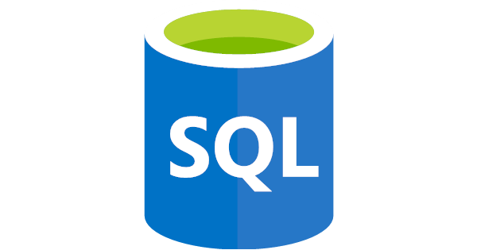

About SQL
Structured Query Language (SQL) (pronounced /ˌɛsˌkjuˈɛl/ S-Q-L; or alternatively as /ˈsiːkwəl/ ⓘ "sequel") [4][5] is a domain-specific language used to manage data, especially in a relational database management system (RDBMS). It is particularly useful in handling structured data, i.e., data incorporating relations among entities and variables. Introduced in the 1970s, SQL offered two main advantages over older read–write APIs such as ISAM or VSAM. Firstly, it introduced the concept of accessing many records with one single command. Secondly, it eliminates the need to specify how to reach a record, i.e., with or without an index. Originally based upon relational algebra and tuple relational calculus, SQL consists of many types of statements,[6] which may be informally classed as sublanguages, commonly: data query language (DQL), data definition language (DDL), data control language (DCL), and data manipulation language (DML).[7] The scope of SQL includes data query, data manipulation (insert, update, and delete), data definition (schema creation and modification), and data access control. Although SQL is essentially a declarative language (4GL), it also includes procedural elements.